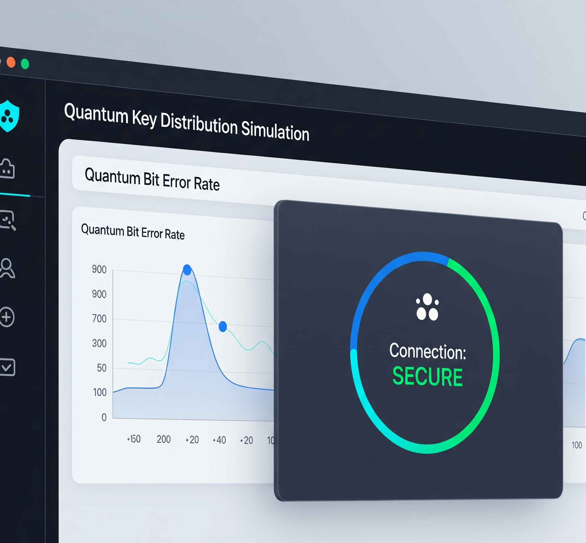

Quantum Secure Banking (QKD)
A Python-based simulation of a quantum-proof financial system.
The Problem
Traditional encryption methods are becoming increasingly vulnerable to the power of emerging quantum computers. A secure, future-proof method is needed to protect sensitive financial data from being compromised.
My Solution
I developed a simulation that uses the principles of quantum mechanics to secure financial transactions. By implementing the BB84 Quantum Key Distribution (QKD) protocol, the system allows two parties to generate a shared, secret key that is provably secure. Any attempt to eavesdrop on the key exchange introduces detectable errors, immediately alerting the system to a breach.
Challenges & Lessons Learned
The main challenge was bridging the gap between theoretical quantum physics and practical Python code. Working with the Qiskit library required a deep dive into quantum states and measurements. This project taught me the importance of robust error handling and gave me a profound appreciation for how physics-based principles can create next-generation security solutions.